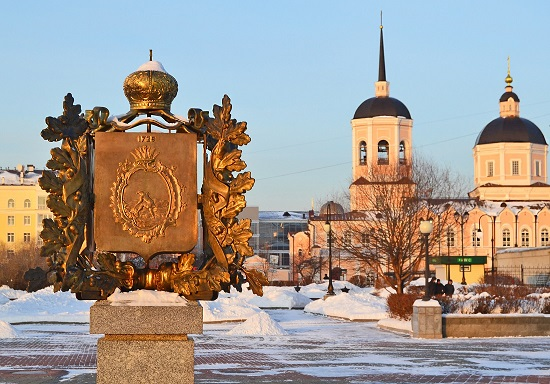

Tomsk is one of the oldest town in Siberia. It celebrated its 400th anniversary in 2004. Tomsk is famous as a city of students.A large number of educational institutions in the city have contributed to making Tomsk a major center for Russia's IT industry. Tomsk was one of the first cities in Russia to gain access to the Internet, which became available in the early 1990s owing to grants received by universities and scientific cooperation.